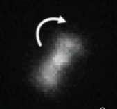
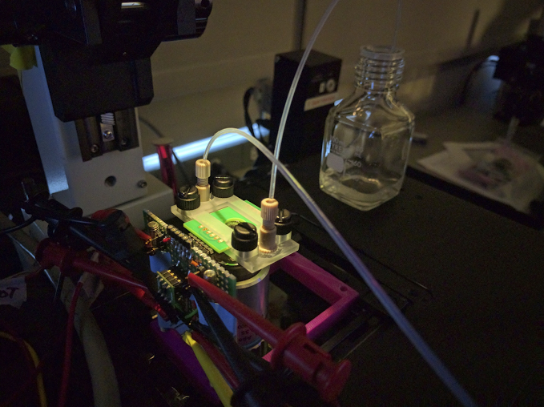
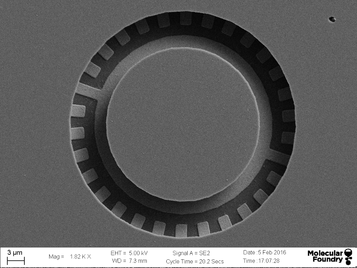
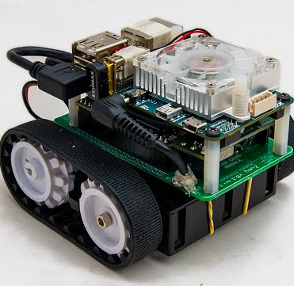
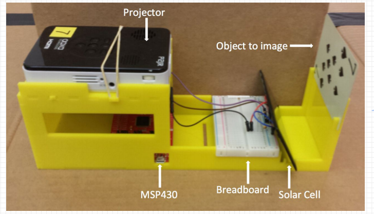
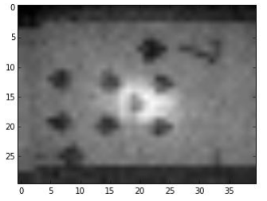
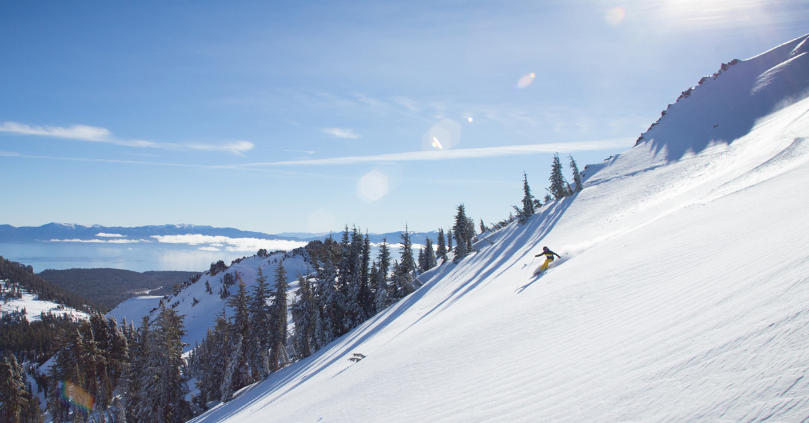

Hi, I'm Alex, a senior undergraduate studying Computer Science and Applied Math at UC Berkeley, with deep interests in control theory, robotics, and machine learning. In my spare time, I enjoy practicing Chinese, skiing in Lake Tahoe, and long drives in my Smartcar.
Goals
- Academic
- I’m applying to Electrical Engineering Ph.D. programs.
- My research interests are in control theory, robotics, and machine learning.
- Career
- My career goal is to be a researcher and instructor.
Experience and Projects
I’ve done research, internships, and tons of courses (35 science and math) to get a better feel for the fields I am interested in. Here’s a quick summary of recent work. My Github account and full CV are available in the sidebar.
- Research
- Since 2014, I am a proud undergraduate researcher in the Maharbiz Group at UC Berkeley in collaboration with the Molecular Foundry at the Lawrence Berkeley National Lab.
- By anchoring bacterial flagella to glass, we study and control E. coli flagellar dynamics.
- Flagellar dyanmics are influenced by surrounding chemoattractant concentration.
- We observe the rotation of bacteria with fluorescence microscopy, as well as using microelectrode impedance readings.
- To speed up our research, I write image processing scripts that segment bacteria and automatically analyze rotation patterns.
- One application of this research is using bacteria as a biosensor.
- Another application steers a bacterium by flowing particular concentrations through a microfluidic device.
- In August, my team’s poster won an award!



(Photos: Tom Zajdel)
- Industry
- Over the summer, I was a computer vision research intern at Umbo CV in Taipei, Taiwan.
- I developed few-shot learning program that makes a CNN learn new objects in real time.
- Check out the demo and code.
- This job also familiarized me with modern CV research: I studied and presented multiple conference papers to the company’s CV group.
- Coursework
- In robotics, my group built an Autonomous Maze Solving Robot. Our Zumy finds its way through arbitirary mazes!
- I developed Activity, an iOS final project, which uses iPhone accelerometer, gyro, and GPS data to measure and track a user’s activity.
- In a DSP course, I completed various projects, including: a laptop sonar, a flight radar receiver, MRI compressed sensing lab, and wavelet compression-based image transmission over radio.
- In a circuits course, I created a black and white “camera” from an Arduino and solar cell.



What do I do in my free time?
- Study Chinese
- I have taken four years of Mandarin classes at Berkeley and in Beijing.
- I am a Berkeley Huang Scholar and my Chinese name is 常浩天.
- In 2015, I completed a pledge to only speak Chinese for 8 weeks as a student of Princeton in Beijing.
- Travel
- The last three summers, I have been grateful to receive merit scholarships to fund my studies and travel to East Asia.
- After freshman year, I also studied abroad in Southeast Asia (Cambodia, Malaysia, Singapore, and Thailand) thanks to Banco Santander.
- Ski
- My favorite activity is going on Lake Tahoe cabin trips with Cal’s ski and snowboard club.
- Last winter break, we drove 1,000 miles from Berkeley to Red Mountain, British Columbia.

- awal@berkeley.edu
- (425) 350-8482